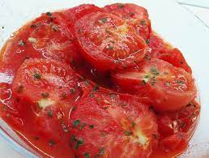

Pomodori stufati
Torna alle altre ricette

Tempo di preparazione: 15 minuti
Tempo di cottura 10 minuti
Ingredienti per 2-3 porzioni
- 4 pomodori medi, tagliati a dadini o passati al robot
- 2 cucchiai di brodo vegetale
- 40g di cipolla, tagliata a dadini
- 40g di peperoni verdi, tagliati a dadini
- 1/2 cucchiaino di sale marino
- 1 cucchiaino di erbe miste (origano, rosmarino, timo, maggiorana, ecc.)
- 3 cucchiai di farino di frumento integrale
- 130 ml di latte vegetale
- q.b. pepe nero
Preparazione
- Saltate per 3 minuti la cipolla, il peperone, il sale e le erbe aromatiche nel brodo vegetale.
- Aggiungete i pomodori e proseguite la cottura
- In una scodella mescolate la farina e il latte fino ad eliminare tutti i grumi. Aggiungete il composto ai pomodori e mescolate finché il tutto si addensa.
- Aggiustate di pepe.
Torna alle altre ricette